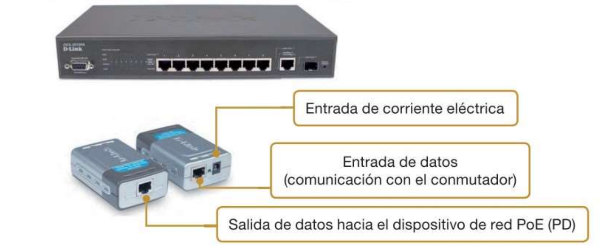

5. El cableado de red
El cableado de red es el conjunto de cables y elementos de conexión que permiten interconectar los diferentes dispositivos de una red. En una instalación profesional no basta con conseguir que los equipos se comuniquen: el cableado debe estar correctamente planificado, instalado, identificado y comprobado.
Una instalación de cableado debe facilitar además el mantenimiento y la ampliación de la red. Por este motivo, los cables se organizan mediante armarios de comunicaciones, paneles de parcheo, tomas de red, canalizaciones y otros elementos.
En una red podemos encontrar diferentes tipos de cableado. El cableado horizontal conecta las tomas de red de una planta o zona con el armario de comunicaciones correspondiente. El cableado vertical o backbone permite interconectar diferentes plantas, armarios o edificios y suele utilizar fibra óptica cuando se necesitan mayores distancias o velocidades.
5.1. El proyecto de instalación
Antes de realizar una instalación de red es necesario planificarla. El proyecto de instalación determina cómo se distribuirán los diferentes elementos de la red y por dónde discurrirá el cableado.
Entre las tareas que pueden formar parte de una instalación encontramos:
- Instalación de los dispositivos de red, como switches y routers.
- Instalación de los adaptadores de red cuando sean necesarios.
- Tendido del cableado por las canalizaciones previstas.
- Instalación de tomas de red y paneles de parcheo.
- Conexión de los cables utilizando las herramientas adecuadas.
- Etiquetado e identificación de cables y conexiones.
- Comprobación del cableado y, cuando corresponda, certificación de la instalación.
- Elaboración de la documentación de la instalación.
Antes de tender un cable es importante conocer el recorrido que tendrá. Normalmente se mide la distancia que debe recorrer y se deja una cantidad adicional que permita realizar las conexiones y trabajar cómodamente.
Importante
El cableado debe instalarse respetando las especificaciones del fabricante. No debe aplastarse, doblarse por debajo de su radio mínimo de curvatura ni someterse a una tensión excesiva, ya que estas acciones pueden modificar sus características y provocar problemas de transmisión.
5.2. Elementos de la instalación
Los cables de red deben integrarse en la infraestructura del edificio. Para ello se utilizan diferentes elementos que permiten protegerlos, organizarlos y facilitar su mantenimiento.
En instalaciones pequeñas puede ser suficiente con utilizar canaletas y cajas de superficie. En instalaciones de mayor tamaño es habitual disponer de armarios de comunicaciones o racks, canalizaciones, paneles de parcheo y tomas de red distribuidas por las diferentes zonas del edificio.
5.2.1. Armarios y canaletas
El rack o armario de comunicaciones es una estructura en la que se instalan de forma ordenada los diferentes equipos y elementos de conectividad de una red.
En un rack podemos encontrar switches, paneles de parcheo, organizadores de cables, bandejas, sistemas de alimentación y otros equipos de comunicaciones.

Los racks utilizan unas dimensiones normalizadas. La altura de los equipos suele expresarse en unidades de rack (U). Una unidad de rack equivale a 44,45 mm de altura.
Las canaletas son estructuras, normalmente de plástico o metal, que permiten conducir y proteger los cables. También pueden utilizarse bandejas portacables, especialmente en falsos techos y otras zonas técnicas.
Estos elementos permiten mantener el cableado organizado y facilitan las tareas de mantenimiento y ampliación de la instalación.
5.2.2. Suelos y techos técnicos
En determinados edificios se utilizan suelos técnicos y falsos techos para facilitar el recorrido de las instalaciones.
Los suelos técnicos permiten disponer de un espacio bajo el suelo por el que pueden discurrir cables de datos, alimentación eléctrica y otras instalaciones. De forma similar, los falsos techos permiten conducir el cableado por la parte superior de las estancias.
Estas soluciones facilitan la instalación y permiten realizar modificaciones posteriores sin tener que realizar grandes obras.
Nota
En una instalación profesional es importante que el cableado quede protegido y que pueda accederse a él cuando sea necesario realizar tareas de mantenimiento o ampliación.
5.3. La instalación eléctrica y de alimentación
Los dispositivos de red necesitan alimentación eléctrica, por lo que la instalación de red debe tener en cuenta también las necesidades eléctricas de los equipos.
Los equipos deben conectarse a una instalación eléctrica adecuada y, cuando corresponda, disponer de las medidas de protección y puesta a tierra previstas por la normativa.
Los armarios de comunicaciones suelen concentrar una gran cantidad de equipos, por lo que es especialmente importante mantener organizada la alimentación eléctrica y evitar que los cables de alimentación y de datos formen una instalación desordenada.
Uno de los elementos que puede utilizarse para mejorar la continuidad del servicio es el SAI (Sistema de Alimentación Ininterrumpida).
Un SAI dispone de baterías que permiten mantener temporalmente alimentados los equipos cuando se produce un corte de corriente. Dependiendo del modelo, también puede proporcionar protección frente a determinadas alteraciones de la alimentación eléctrica.
Esto permite disponer de tiempo para mantener el servicio durante un corte breve o realizar un apagado controlado de los equipos.
Nota
Un SAI no proporciona alimentación indefinidamente. Su autonomía depende de la capacidad de sus baterías y del consumo de los equipos conectados.
Además de la alimentación eléctrica, en instalaciones con muchos equipos es necesario tener en cuenta la temperatura y la ventilación. Los dispositivos electrónicos generan calor durante su funcionamiento y una temperatura excesiva puede afectar a su funcionamiento y reducir su vida útil.
Por este motivo, los armarios y salas que contienen equipos de comunicaciones deben disponer de una ventilación o climatización adecuada.
5.4. Elementos de conectividad
El cableado de una red no está formado únicamente por cables. Para conectar el cableado con los diferentes dispositivos se utilizan elementos como paneles de parcheo, latiguillos, tomas de red y conectores.
Estos elementos permiten organizar la instalación y facilitan que los dispositivos puedan conectarse y desconectarse sin tener que modificar continuamente el cableado permanente.
5.4.1. Paneles de parcheo
El panel de parcheo o patch panel es un elemento instalado normalmente en el rack que permite terminar y organizar los cables procedentes de las diferentes tomas de red.
Cada puerto del panel corresponde normalmente a una conexión del cableado de la instalación.
Por ejemplo, una conexión Ethernet típica puede seguir este recorrido:
Ordenador → latiguillo → toma de red → cableado permanente → patch panel → latiguillo → switch

El panel de parcheo permite separar el cableado permanente de las conexiones que se realizan mediante latiguillos. De esta forma, si cambia la ubicación de un equipo o la conexión que necesita, normalmente basta con cambiar el latiguillo correspondiente en lugar de modificar el cableado instalado en las paredes.
5.4.2. Conexiones a tomas de red
En las redes Ethernet que utilizan cable de par trenzado se emplean conectores modulares de 8P8C, conocidos habitualmente como RJ45.
El conector dispone de ocho posiciones y permite conectar los cuatro pares del cable de red.
Los conductores deben terminarse siguiendo uno de los esquemas normalizados de cableado, T568A o T568B.
El esquema T568B es muy habitual en instalaciones Ethernet.
| Pin | T568A | T568B |
|---|---|---|
| 1 | Blanco/verde | Blanco/naranja |
| 2 | Verde | Naranja |
| 3 | Blanco/naranja | Blanco/verde |
| 4 | Azul | Azul |
| 5 | Blanco/azul | Blanco/azul |
| 6 | Naranja | Verde |
| 7 | Blanco/marrón | Blanco/marrón |
| 8 | Marrón | Marrón |

Importante
En una instalación de cableado estructurado debemos mantener un criterio de terminación coherente y documentado. No se debe cambiar arbitrariamente el esquema utilizado en los diferentes puntos de la instalación.
5.4.3. Confección de latiguillos RJ45
Los latiguillos son cables de red cortos que se utilizan para conectar los diferentes elementos de la instalación.
Por ejemplo, un latiguillo puede conectar un ordenador con una toma de red o un puerto de un patch panel con un puerto de un switch.
Para confeccionar un latiguillo de cobre es necesario colocar los ocho conductores en el orden correspondiente y fijarlos al conector mediante una herramienta de crimpado.
En los latiguillos utilizados habitualmente en Ethernet se emplea normalmente el mismo esquema de cableado en ambos extremos, por ejemplo:
T568B — T568B
o:
T568A — T568A
Este tipo de conexión se denomina cable directo.
Tradicionalmente también se utilizaban los cables cruzados, que empleaban T568A en un extremo y T568B en el otro. Estos cables permitían conectar directamente determinados dispositivos cuyos pares de transmisión y recepción estaban situados en posiciones diferentes.
Sin embargo, los equipos Ethernet modernos suelen incorporar Auto-MDI/MDI-X, que permite detectar automáticamente la disposición necesaria de los pares. Por ello, los cables cruzados han dejado de ser necesarios en la mayoría de las conexiones Ethernet actuales.
Para recordar
En las redes Ethernet actuales, lo habitual es utilizar cables directos. Los cables cruzados tienen principalmente interés histórico y didáctico, aunque todavía pueden encontrarse en determinadas situaciones.
5.4.4. Longitud del cableado
En una instalación Ethernet de cobre es importante respetar las distancias máximas establecidas para el tipo de cableado utilizado.
En el cableado estructurado de cobre se toma habitualmente como referencia un máximo de 100 metros para el canal completo. El canal incluye el cableado permanente y los latiguillos utilizados para realizar las conexiones.
De forma habitual, se considera una longitud máxima de 90 metros para el enlace permanente y hasta 10 metros adicionales para los latiguillos, aunque la distribución exacta de estas longitudes puede depender de la instalación. :contentReference[oaicite:0]{index=0}

Por ejemplo, podemos tener:
90 m de cableado permanente + latiguillos = canal de hasta 100 m
Si se necesitan distancias superiores, no debemos simplemente añadir más cable de cobre. Dependiendo de la velocidad, la distancia y las características de la instalación, puede ser necesario utilizar fibra óptica u otra solución de infraestructura de red.
Importante
Los 100 metros corresponden al canal completo y no significan que podamos instalar 100 metros de cableado permanente y añadir después otros 10 metros de latiguillo.
### 5.4.5. Etiquetado de los cables
Una instalación de red debe estar correctamente identificada y documentada.
Cada cable debería poder identificarse en sus extremos y relacionarse con la toma de red, el panel de parcheo y el puerto correspondiente.
El sistema de identificación puede utilizar información como la planta, la sala, el armario y el número de toma.
Por ejemplo, podríamos utilizar un identificador como:
02-A01-P08
Este identificador podría indicar que la toma pertenece a la planta 2, al armario A01 y al puerto 8.
No existe un único formato que deba utilizarse en todas las instalaciones. Lo importante es que el sistema utilizado sea coherente, único y esté documentado.

Buenas prácticas
El etiquetado debe permitir identificar rápidamente un cable sin necesidad de seguirlo físicamente por toda la instalación.
5.4.6. Comprobación del cableado
Una vez instalado el cableado es necesario comprobar que las conexiones se han realizado correctamente.
Una comprobación básica puede verificar que los ocho conductores tienen continuidad y que se encuentran conectados en el orden correcto. Sin embargo, una prueba de continuidad por sí sola no garantiza que el cableado pueda funcionar correctamente a la velocidad prevista.
Para realizar comprobaciones más completas existen equipos especializados que pueden analizar diferentes características del enlace, como la longitud, la atenuación, la diafonía y otros parámetros eléctricos.
Cuando se necesita demostrar que una instalación cumple los requisitos de una determinada categoría o clase de cableado, se utiliza un certificador de cableado.
La certificación permite comparar las características medidas con los límites establecidos por los estándares correspondientes.

Importante
Comprobar un cable y certificar un cable no son exactamente lo mismo.
Un comprobador básico puede indicar que los conductores están correctamente conectados, mientras que un certificador realiza mediciones más completas para determinar si el enlace cumple los requisitos establecidos para el cableado que se pretende instalar.
5.4.7. Alimentación mediante PoE
En algunas redes Ethernet es posible utilizar el mismo cable de red para transportar datos y alimentación eléctrica. Esta tecnología se denomina PoE (Power over Ethernet).
PoE resulta especialmente útil para dispositivos que necesitan conectividad de red y alimentación eléctrica, como puntos de acceso Wi-Fi, teléfonos IP o cámaras IP.
En una instalación PoE podemos distinguir dos elementos:
- PSE (Power Sourcing Equipment): dispositivo que proporciona la alimentación, como un switch PoE.
- PD (Powered Device): dispositivo que recibe la alimentación, como una cámara IP compatible con PoE.

Las primeras versiones estandarizadas de PoE utilizaban dos pares del cableado. Posteriormente, IEEE 802.3bt amplió PoE para utilizar los cuatro pares, permitiendo proporcionar una mayor potencia a los dispositivos compatibles. :contentReference[oaicite:1]{index=1}
Ejemplo
Un punto de acceso Wi-Fi compatible con PoE puede recibir simultáneamente:
- Los datos necesarios para comunicarse con la red.
- La alimentación eléctrica necesaria para funcionar.
De esta forma, puede instalarse utilizando un único cable de red.
Importante
Para utilizar PoE hay que comprobar la compatibilidad entre el PSE, el PD y el cableado. No todos los dispositivos proporcionan o aceptan la misma potencia.
5.5. Resumen del cableado de una red
En una instalación de red de cobre podemos encontrar diferentes elementos que trabajan conjuntamente.
El cableado permanente constituye la parte fija de la instalación. Sus extremos suelen terminar en un panel de parcheo y en una toma de red.
Los latiguillos permiten conectar ese cableado permanente con los equipos de red. Por ejemplo, un ordenador puede conectarse mediante un latiguillo a una toma de pared, mientras que otro latiguillo conecta el patch panel con el switch.
De esta forma, una conexión completa puede representarse así:
Ordenador → latiguillo → toma de red → cableado permanente → patch panel → latiguillo → switch
Esta organización permite que el cableado fijo permanezca instalado mientras las conexiones de los equipos pueden modificarse mediante los latiguillos.
Una instalación profesional debe estar además correctamente canalizada, etiquetada, documentada y comprobada para facilitar su mantenimiento y futuras ampliaciones.